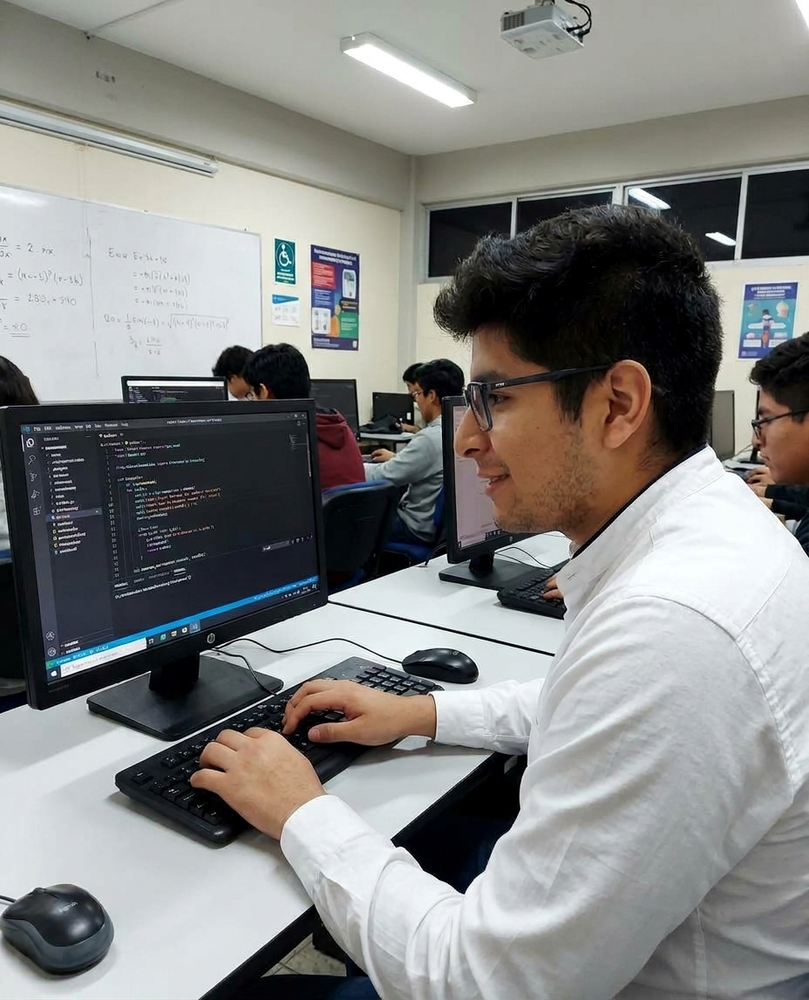
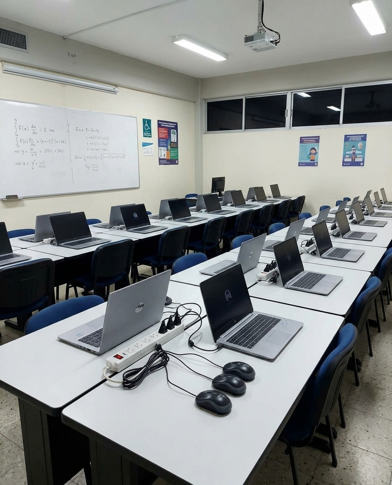
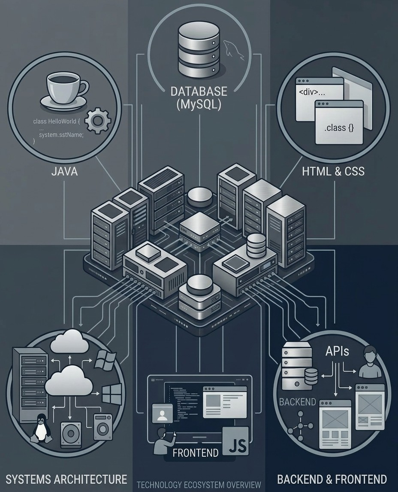

Desde que llegué al centro tenía claro a lo que me quería dedicar. La experiencia con profesores, compañeros y asignaturas han sido interesantes y gratificantes. Siempre hay cosas nuevas que aprender.
El mundo de la informática es mucho más complejo e interesante de lo que aparenta a simple vista. Me quedo con un pensamiento que siempre voy a tener en mi mismo y es que cuando te sientas, y programas, puedes crear y hacer lo que quieras, no hay límites.

El centro cuenta con gran variedad de instalaciones.
Aulas preparadas con equipos de proyección, equipos de ordenadores, mobiliario escolar robusto y actualizado con pizarras táctiles.
Cuenta con 2 áreas multiuso, una cafetería para el ocio y el descanso, zonas ajardinadas, parking privado propio y 2 edificios más dedicados a módulos de formación específicos.

Por otro lado, tenemos gran variedad de módulos, formaciones y profesores disponibles para brindar una experiencia grata al alumno.
Las formaciones se basan en distintas asignaturas relacionadas con el módulo y estas se calificarán mediante resultados de aprendizaje RA.